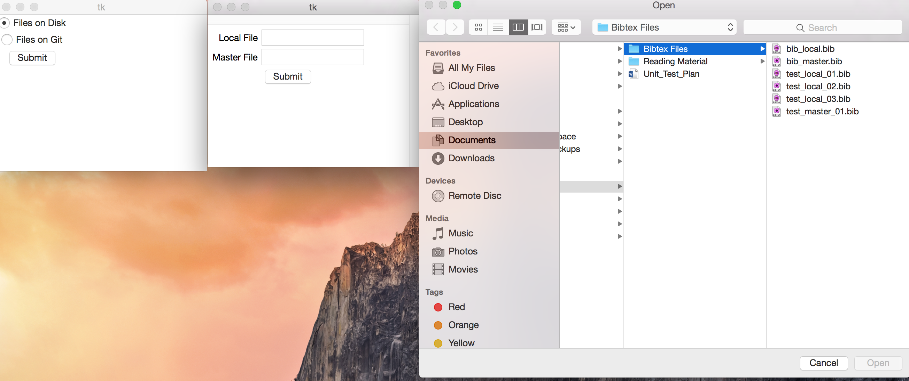
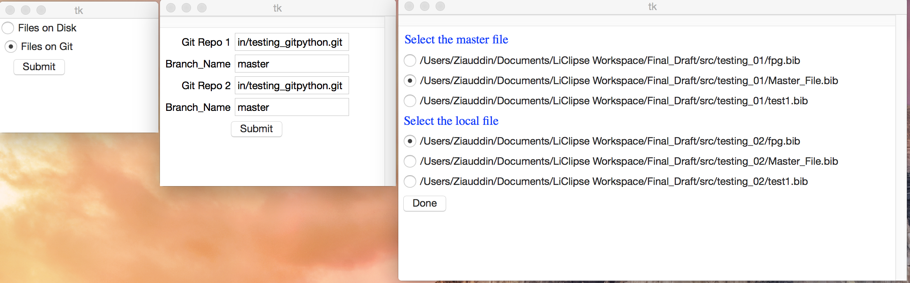

Bibtex Comparator¶
Introduction¶
This application is used to compare two bibtex files
Throughout the application we refer to the two files as local file and master file :
- Local file The file that needs to be updated
- Master file The file which is used as reference for update
The application opens with a window that asks the user for the location of the two files
The user has two options:
- Local Hard Disk
- Remote Github Location
After the files are selected, application calls the various modules to compare and get the difference between the files Each record in the local file is compared with the master file The following two actions will take place:
- If there is any difference in the bibtex record on the local file and the master file it is recorded
- If there is a property on the record in the master file that does not exist on the local file it is recorded
The application will list all the differences and allows the user to select what changes they want to be made to the local file
Tutorial¶
Two ways of selecting the files:
- Hard disk

Then you can go ahead and select the local file and the master file from the disk
- Git Repo

You can select the local file and master file from the list of bibtex files in each repo provided
Choose the updates you want to make to the local file and press done: